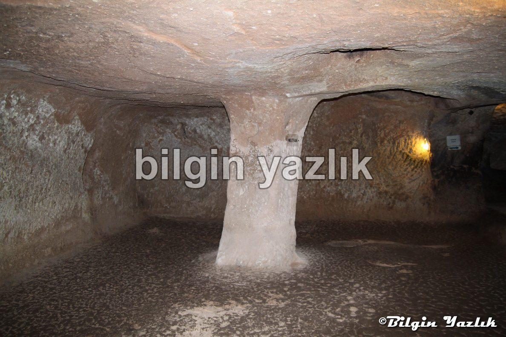
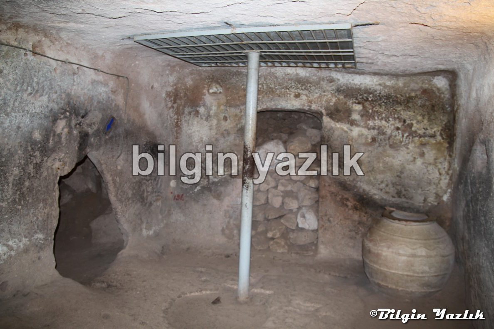
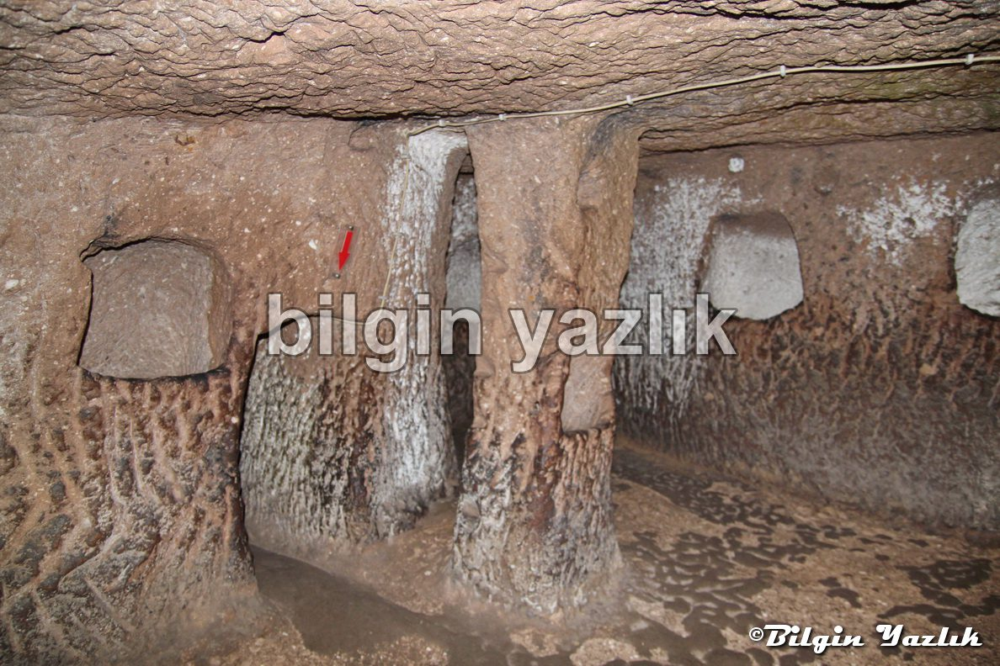
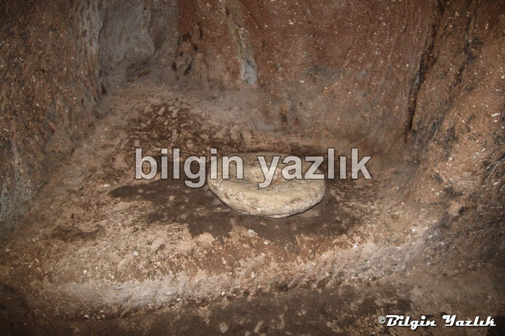
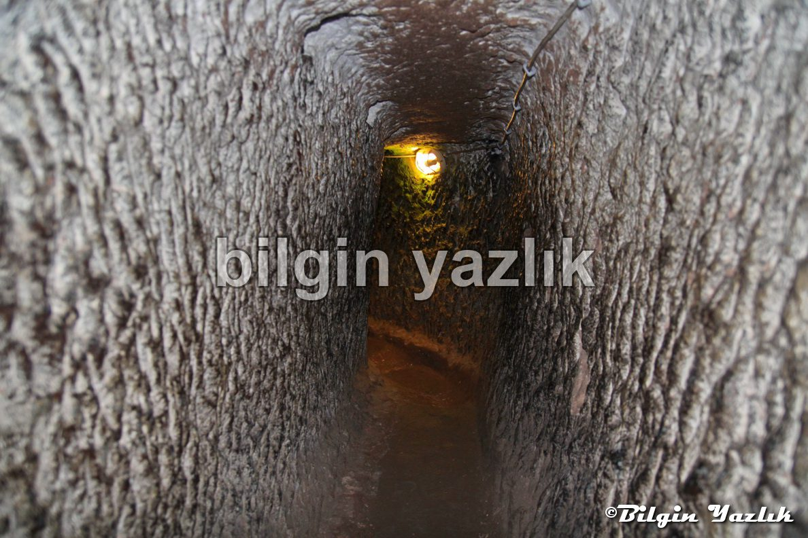
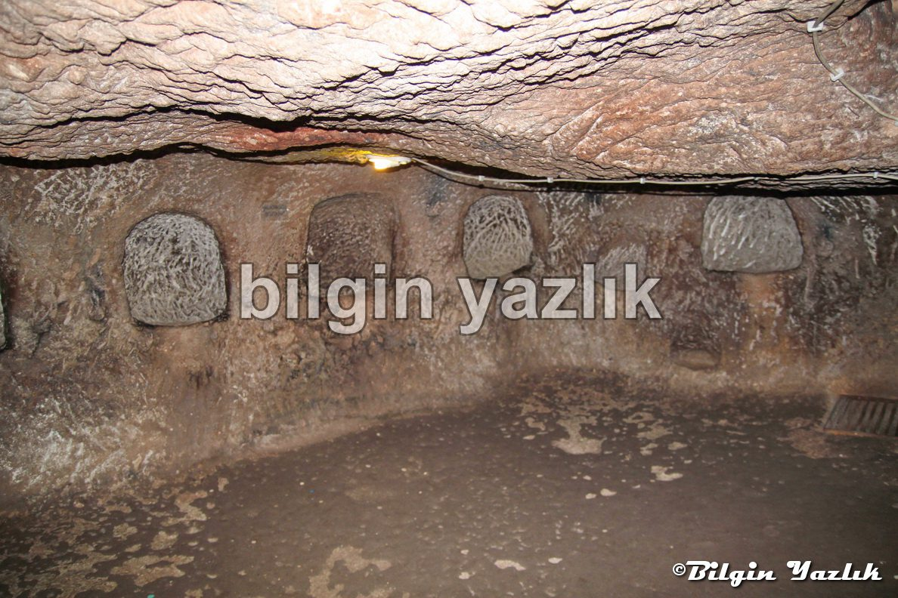
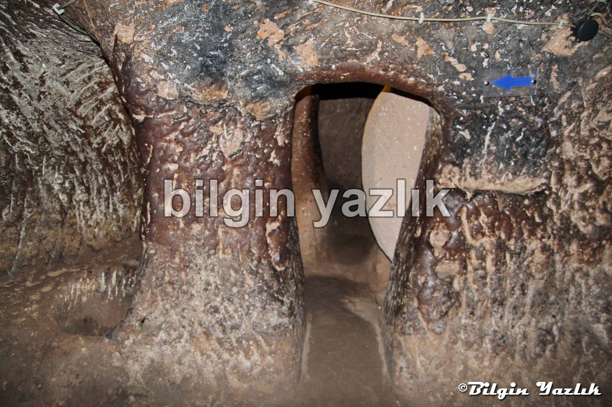
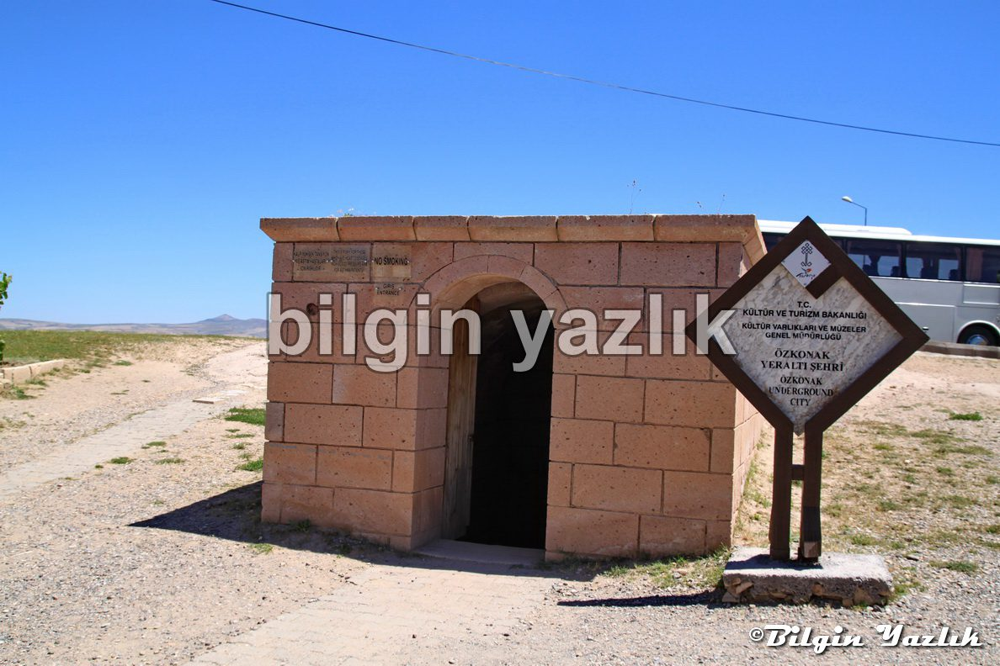

Kapadokya · 13 Haziran 2014
Özkonak Yer Altı Şehri
Avanos’a yaklaşık 15 km mesafede bulunan bu yer altı şehri, irili ufaklı birkaç odadan ve bu odalara birbirine bağlayan tünel sisteminden oluşuyor.
Yerin 3 kat altına inen bu şehirde ağıl, mutfak, şırahane, yiyecek deposu, havalandırma tüneli gibi alanlar ve kilit taşlı kapılar bulunuyor.
Çok büyük olmayan bu yer altı şehri yolunuzun üzerinde ise görülebilir.
Konum:
38°48’24.70″K
34°50’27.00″D








Bu yazı taliyol arşivinden taşınmıştır. · özgün kayıt